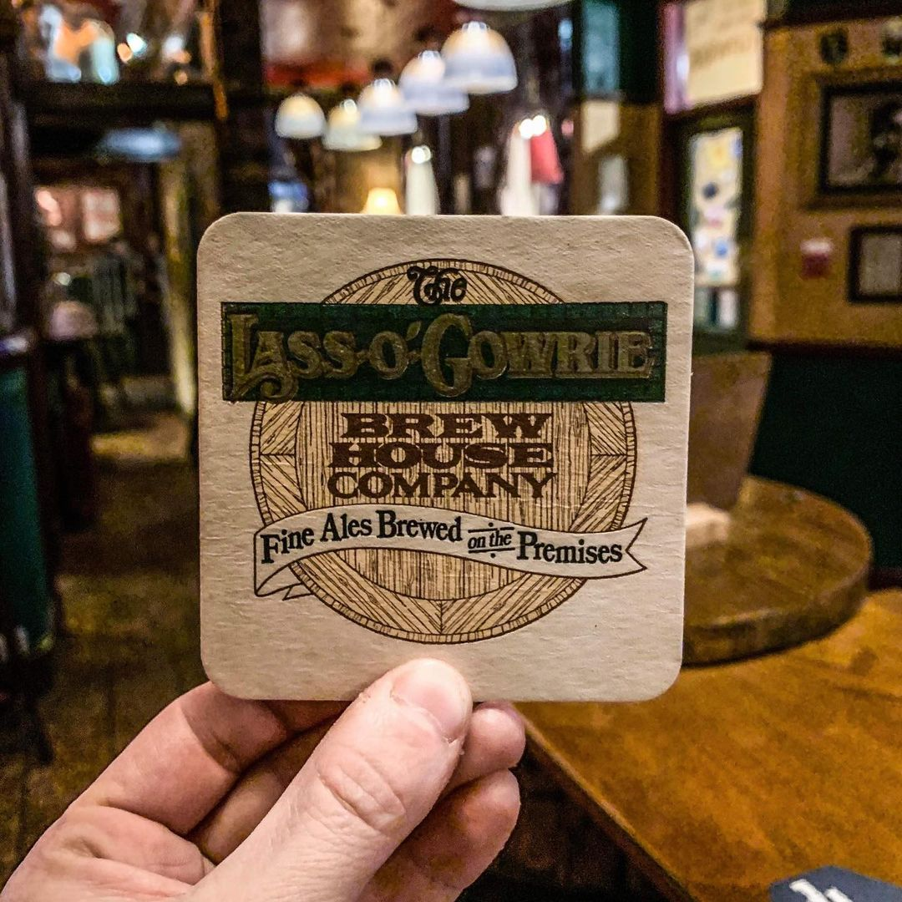
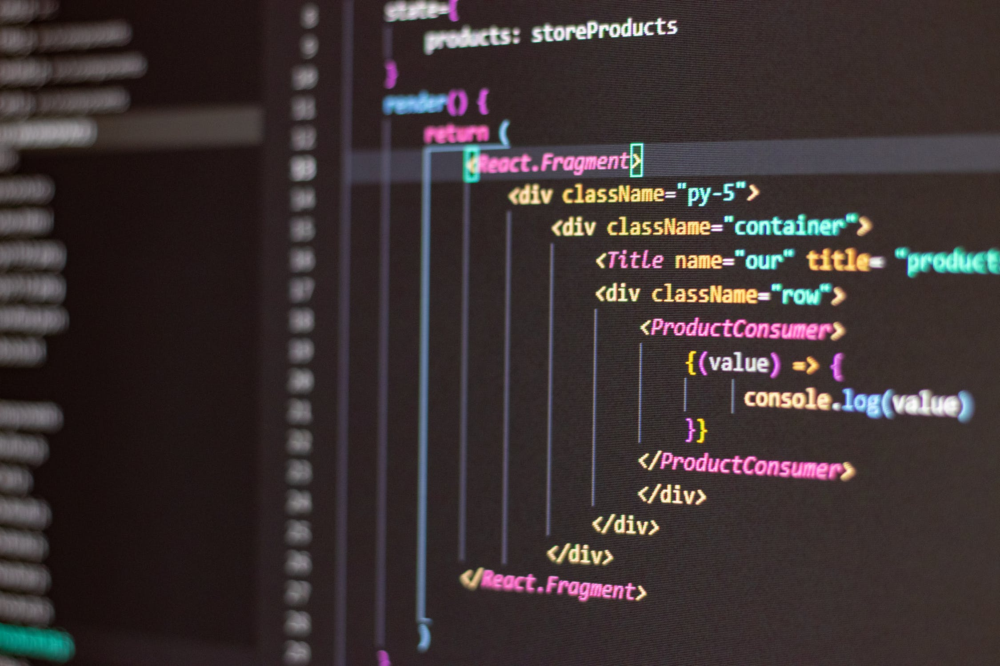

The Salisbury Ale House is a fantastic rock bar based in the center of
Manchester. This is a website I designed in my spare time using HTML,
CSS and JS.
Spotify
This is a Spotify Clone I made using HTML, CSS and JavaScript.
Disclaimer: Designed to be only the GUI and this project is
best viewed on a normal laptop monitor.

API HUB
This is an application that demonstrates usage of connecting to
various API's, pulling data to create a weather app, country
information app and many more.

Javascript & jQuery
This application was created as a library that I could refer to for
future projects, it covers a large range of functionalities that are
useful when designing applications. This project contains HTML, CSS,
JavaScript and JQuery.